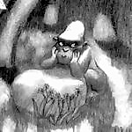
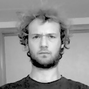

Inspiration et convivialité
Une centaine de tickets sont en vente pour vous permettre d'apprendre mais aussi de faire le plein d'énergie dans la joie et la bonne humeur.
Inspiration et convivialité
Une centaine de tickets sont en vente pour vous permettre d'apprendre mais aussi de faire le plein d'énergie dans la joie et la bonne humeur.
Une journée de conférences plénières pour apprendre et démarrer des conversations.
Des partages d'expérience pour mieux travailler dans le Web : développement, graphisme, communication, méthodes et cultures.
Venez puiser de nouvelles idées pendant une journée rythmée par les conversations et les partages de savoirs.
Une journée de pratique et d'expérimentations.
Les participants prennent en main le programme pour tester, expérimenter et poursuivre les discussions de la veille.
C'est le moment rêvé pour partager votre savoir ou bénéficier d'un mentor. Vous vouliez apprendre l'UX, JavaScript, le Responsive Web Design ou vous améliorer en Web mobile ? Il y aura forcément un élaboratoire pour ça.
Deux soirées pour faire connaissance et renforcer les liens.
Le jeudi soir, participants et les orateurs font connaissance dans une ambiance convivialle et informelle.
Le vendredi soir, on se détend tout en continuant à rebondir sur les nouvelles idées de la journée.
Samedi soir et dimanche, on repart chez soi plein d'énergie, on continue les conversations au café ou on déambule en ville.
Les tickets pour les conférences, les élaboratoires et la soirée communautaire sont en vente. Ils comprennent petit-déjeuner, collations et déjeuner.
Hésitant(e) ? Jetez un œil aux vidéos des précédentes éditions, aux albums photos ou lisez ce que les participants en ont pensé.




Propose un Lightning Talk ou un élaboratoire jusqu'au 28 février 2014.

Sud Web 2014 se déroulera en plein cœur de Toulouse.
Le vendredi, les conférences auront lieu aux Espaces Vanel; un lieu offrant une vue imprenable sur la ville. Nous y resterons également pour la soirée communautaire.
Le samedi, les élaboratoires se déroulent à l'école d'informatique EPITECH.
Crédit photo : wcc2013